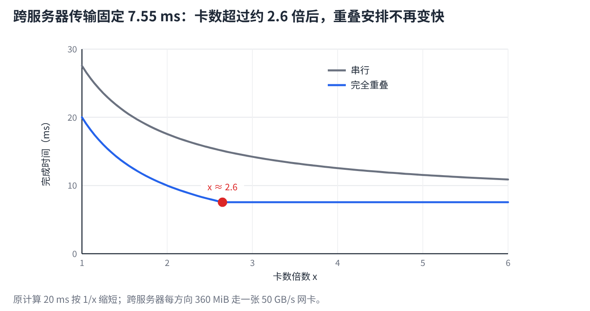
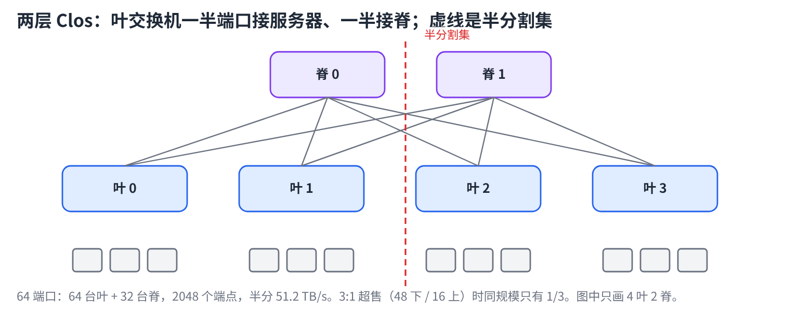
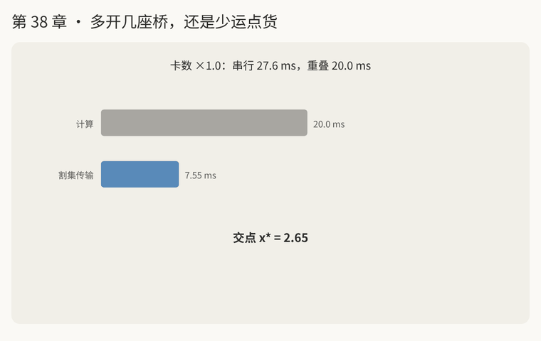

第 38 章 · 从超节点走向集群：出口、割集与 Clos 网络
本地运行
git clone https://github.com/wikieden/ai-infra-from-constraints
cd ai-infra-from-constraints/code/notebooks
pip install jupyterlab torch numpy
jupyter lab ch38_cluster.ipynb也可以下载后直接用 VS Code 打开 .ipynb 运行。需要 GPU 的章节在 Colab 里选「代码执行程序 → 更改运行时类型 → GPU」。
本章回答：模型为什么非要跨服务器？卡数翻倍，什么时候就快不动了？一个两层 Clos 网络能接多少张卡，超售比 3:1 让每张卡少了多少跨区带宽？UB 想统一的到底是什么？
讲解日期：2026-11-24 · 上一章：第 37 章 从并行方案到超节点规模 · 下一章：第 39 章 跨节点流量与物理路径
对应原文：materials/ai-infra-book/manuscripts/07-数据中心网络.md章首 L1–L11、§7.1 L13–L115（例题 7.1，图 7-1 到 7-3）
本章缩写：NIC = Network Interface Card（网络 / 接口 / 卡）· Clos = 多层交换网络（以 Charles Clos 命名）· fat-tree = 胖树（各层总带宽不收窄的 Clos）· rail = 两台服务器上编号相同的网卡经同一台交换机连成的一条路径 · InfiniBand / RoCE = 两种 RDMA 网络。全部缩写见 缩写与术语表
第 6 部分把卡分到一台服务器（或一个超节点）里。本部分把一部分卡挪到另一台服务器：原来走 NVLink 的部分和，现在要走 InfiniBand 或 RoCE。要重算的是放置和执行代价，不是重新学并行。
本部分的贯穿配置：两台 HGX H100，共 16 张卡（rank 0–7 在服务器 A，8–15 在 B）。机内 NVLink 每方向 450 GB/s；每卡一张 400 Gbit/s 网卡，每方向 50 GB/s，经 PCIe 交换芯片独占；编号相同的网卡接同一台交换机（一条 rail）。集合通信每轮启动 0.83 μs（16 卡 AllReduce 小消息约 25 μs ÷ 30 轮）。
讲解
第一步：为什么要跨服务器（2026-11-24）
类比：一本书太厚，一个书包装不下。 分装几个书包后，读书的人要在书包之间来回翻，每次翻都比翻同一本书慢。
原文 L17–L33：
| 任务 | 状态 | 需要 |
|---|---|---|
| 8B 训练，混合精度 Adam（16 B/参数） | 128 GB | 两张 80 GB 卡 |
| 284B 训练，同上 | 约 4.54 TB | 很多卡 |
| DeepSeek V4-Pro 推理（1.6T，0.5 B/参数） | 约 800 GB | 至少 2 台八卡服务器 |
| Kimi K3 推理（2.8T） | 约 1.4 TB | 至少 3 台 |
MoE 只减少每次前向的计算，未被选中的专家仍要存着。切分一旦跨服务器，按层切要交接激活、层内切要汇合部分和、复制模型要汇合梯度：模型相同、切法不同，通信需求就不同。网卡（50 GB/s）比 NVLink（450 GB/s）慢一个数量级，所以先把频繁的 TP 归约留在机内，把 DP 梯度或 PP 交接放到机间，是首先要算的一类方案。知道网络是 IB 还是 RoCE，推不出有效带宽、超售比和恢复时间，要用测量值。
一句话：放不下才跨服务器；跨过去之后，同样的字节要走慢一个数量级的出口。
第二步：割集给出传输下界，强扩展有尽头（2026-11-24）
类比：一座城和外界只有一座桥。 城里人再多、干活再快，运出城的货每秒也只能过那么多。
原文 L41–L70：一块数据依次经过 GPU 内存 → 网卡 → 交换网络 → 对端内存，持续发送时最慢的一段决定吞吐（不能把各段带宽相加）。跨割集 \(\mathcal C\) 要传 \(V_{\mathcal C}\)、有效带宽 \(B_{\mathcal C}\)：
例题 7.1：每台服务器向另一台发 360 MiB，走一张 50 GB/s 网卡：\(T_{\mathcal C} \approx 7.55\) ms。原计算 20 ms，卡数变成 \(x\) 倍：
| 卡数 | 串行 \(20/x + 7.5\) | 完全重叠 \(\max(20/x, 7.5)\) |
|---|---|---|
| ×1 | 27.5 ms | 20.0 ms |
| ×2 | 17.5 ms | 10.0 ms |
| ×4 | 12.5 ms | 7.5 ms |
\(20/x = 7.5\) 时 \(x \approx 2.6\)：再加卡，重叠安排也快不动了。要再快，就减少过桥的字节或多开几座桥（更多网卡同时工作），第 39 章的分层归约两件事都做到。总任务固定叫强扩展；任务随卡数一起涨叫弱扩展。

图 38-1 · 计算按 1/x 缩短，割集传输不变。
一句话：割集给出传输时间的下界；计算缩短到低于它之后，强扩展就到头了。
第三步：Clos 网络能接多少卡，超售让每张卡分到多少（2026-11-24）
类比：小区路网。 楼下的支路（叶交换机下联）连住户，主干道（上联到脊交换机）连各片区；支路比主干道宽多少倍，就是超售比。
原文 L51、L76–L102：\(k\) 端口交换机（QM9700，\(k = 64\)，每端口 50 GB/s）：
| 端点 | 交换机 | 半分带宽 | |
|---|---|---|---|
| 两层无阻塞（叶 32 下 / 32 上） | \(k^2/2 = 2048\) | 96（64 叶 + 32 脊） | 51.2 TB/s |
| 三层 fat-tree | \(k^3/4 = 65{,}536\) | 5120 | 1638.4 TB/s |
| 两层、3:1 超售（48 下 / 16 上） | 3072 | 80 | 25.6 TB/s（无阻塞同规模 76.8） |
半分带宽：把端点分成相等两半，连接两半的链路带宽之和。一个 1024 卡作业占整数台叶交换机：
| 超售比 | 叶数 | 割集链路 | 割集带宽 | 每卡份额 |
|---|---|---|---|---|
| 1:1 | 32 | 1024 | 51.2 TB/s | 50 GB/s |
| 3:1 | 22 | 352 | 17.6 TB/s | 17.2 GB/s |

图 38-2 · 叶交换机一半端口接服务器，一半接脊；虚线是半分割集。
超售何时成瓶颈：网卡发出的字节里比例 \(f\) 要离开本叶交换机，不成瓶颈的条件是 \(f \le 1/r\)。把同一同步组的服务器放在同一组叶交换机下（rail 对齐，第 39 章），\(f = 0\)。
一句话：Clos 用多层交换给端点提供多条路径；超售比 \(r\) 把每卡穿过割集的份额降到 \(50/r\) GB/s，除非流量留在本叶。
第四步：统一互联：接口一样，路径照算（2026-11-24）
类比：快递 App 统一了下单界面。 寄同城和寄外省都在一个界面点，但外省的包裹照样要走干线、照样要更久。
原文 L110–L114：紧耦合的总线适合频繁、细粒度协作；集群网络连大量独立节点，还要处理故障。模型跨服务器后两者同时用到：一次本地访存和一次远程传输表达的是相似的依赖，走的却是不同的提交和完成路径。UB 想为寻址、访问、设备通信提供共同接口。但接口决定程序怎么表达，物理路径决定经过哪些资源：一条指令发起的远程读，数据照样过 50 GB/s 的出口。统一接口的收益要在三处找：少搬字节、缩短发起路径、简化协作，分别对应第 39、40、41 章。
一句话：统一的是写法，不是带宽；先算必需的流量，再算并发，再看顺序。
动画演示：多开几座桥，还是少运点货

可交互版：animations/38-cluster.html（滑块：卡数倍数 1–8；跨服务器流量 ×0.25–×2；出口网卡数 1–8）。
怎么看：
- 两根横条：计算 \(20/x\)（灰）和割集传输 \(V/B\)（蓝）（第二步）；
- 右边显示串行和完全重叠两种安排的完成时间；
- 播放：卡数 1 → 2 → 4（重叠安排停在 7.5 ms）→ 流量减半 → 出口网卡 8 张；
- 交点 \(x^*\) 随流量和网卡数移动。
练习与作答记录
题 1（第二步）：跨服务器要发 480 MiB，经两张网卡（共 100 GB/s），原计算 30 ms。卡数翻 4 倍后，串行和完全重叠各多久？交点 \(x^*\) 是多少？
作答记录：（待作答）
题 2（第三步）：\(k = 128\) 端口的交换机，两层无阻塞 Clos 能接多少端点、要多少台交换机、半分带宽多少（每端口 50 GB/s）？
作答记录：（待作答）
题 3（第三步）：\(k = 64\)，叶交换机 40 下 / 24 上。一个 1024 卡作业占几台叶交换机？割集带宽和每卡份额各多少？
作答记录：（待作答）
原书实验 7-1 到 7-3（L35、L72、L104）。想多练可以做。
口诀
书包装不下才分装，分了就要来回翻；
一座桥过货有上限，人再多也快不过桥；
支路宽主干窄是超售，留在片区里就不堵；
下单界面统一，外省快递还是走干线。
本章复习卡片
I138（割集下界与例题 7.1 的强扩展交点 2.6）、I139（Clos 的 \(k^2/2\)、\(k^3/4\)、半分带宽与超售比 \(f \le 1/r\)）。练习做完后，按答错、卡住的地方再补。
附录 · 延伸阅读
留给以后深入学习用，不影响本章主线。★ 是建议先读的。
推荐阅读
| 读什么 | 读哪里 | 读它为了什么 |
|---|---|---|
| ★ AII 第 7 章 | 章首、§7.1 L1–L115 | 本章原文 |
| Al-Fares 等，A Scalable, Commodity Data Center Network Architecture（SIGCOMM 2008） | fat-tree | Clos 的端点与交换机计数 |
| NVIDIA DGX SuperPOD 参考架构 | 计算网络 | 64 叶 + 32 脊的 2048 GPU 组织 |
| 第 36 章 超节点的物理组织 | 割集、端口分配 | 本章的前置 |
数学原理
- 割集下界：任何调度都不能超过割集带宽。
- 强扩展：\(T(x) = \max(T_c/x, T_{\mathcal C})\)，交点 \(x^* = T_c/T_{\mathcal C}\)。
- Clos 计数：两层 \(k^2/2\)，三层 \(k^3/4\)；交换机 \(3k/2\) 与 \(5k^2/4\)。
公式清单
| 公式 | 意思 |
|---|---|
| \(T_{\mathcal C} = V_{\mathcal C}/B_{\mathcal C}\) | 割集下界 |
| \(T_{\mathrm{serial}} = T_c/x + T_{\mathcal C}\)，\(T_{\mathrm{overlap}} = \max(T_c/x, T_{\mathcal C})\) | 强扩展 |
| 半分带宽 \(= N/2 \times 50\) GB/s（无阻塞） | |
| 超售不成瓶颈 \(\iff f \le 1/r\) |
代码对照：把本章的数字用代码算一遍
代码
ai-infra/solutions/chapter-code/ch38_cluster.py，测试tests/test_ch38.py：
bash cd ai-infra/solutions/chapter-code uv run python ch38_cluster.py uv run pytest tests/test_ch38.py
| 讲义 | 写法 | 跑出来 |
|---|---|---|
| 第二步 | strong_scaling(x) |
27.5 / 20 → 12.5 / 7.5 ms |
| 第三步 | clos(64, L)、oversub_two_layer()、job_cut(1024, d, u) |
2048 / 96、65536 / 5120；3072 / 80；22 / 352 / 17.6 |
代码里才看得到的 3 件事：
- 360 MiB ÷ 50 GB/s 是 7.55 ms，原文取 7.5 ms，交点 2.65 写作约 2.6。
job_cut用上取整：1024 ÷ 48 = 21.3，要占 22 台叶交换机，所以 3:1 时每卡份额是 17.2 而不是 16.7 GB/s。- 三层交换机数 \(5k^2/4\) = \(k^2\)（边缘 + 汇聚，每个 pod \(k\) 台）+ \(k^2/4\)（核心）。
自己改一改（不影响练习答案）：
- 让
strong_scaling的通信也随卡数线性增长（弱扩展），找最优倍数。 - 用
job_cut算 512、2048 卡在 2:1 超售下的每卡份额。 - 给
clos加一个超售比参数。